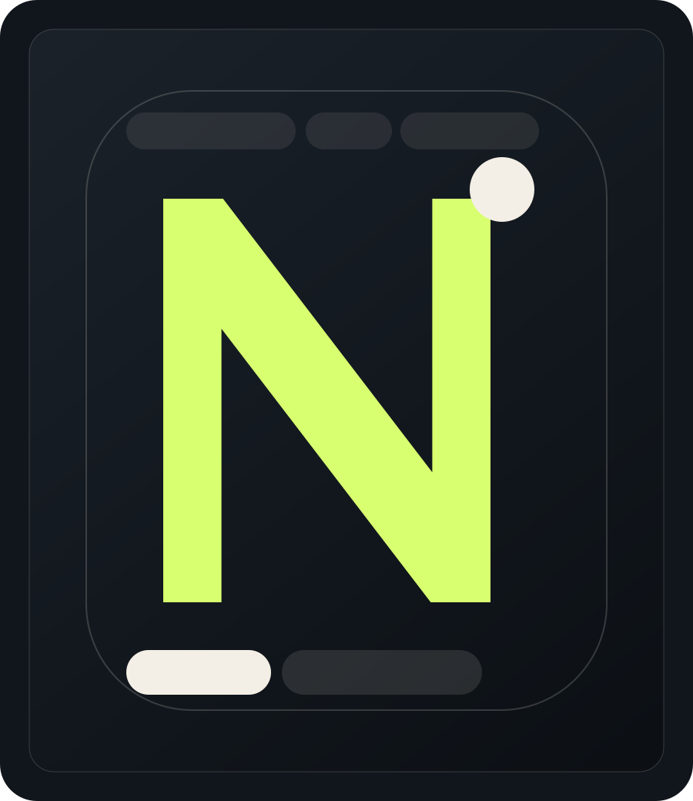

Piliers réunis dans une même offre: IA, web, branding, contenu
Agence IA, web, branding & contenu
Une agence pensée pour faire travailler ton image, ton site et tes agents IA ensemble.
Nova assemble des agents IA, des sites premium, des logos clairs et des mécaniques de contenu social pour les fondateurs qui veulent une présence forte, rapide et rentable.

Founder-led
Décisions rapides, rendu net, zéro dilution.
System-first
Branding, acquisition, automation et delivery dans un seul flux.
Pour cadrer une direction visuelle et une structure solide
Interlocuteur fort plutôt qu’une chaîne de production floue
Potentiel d’automatisation avec des agents reliés au business
Positionnement & preuves
Une présence qui vend avant même le premier call.
On compose des expériences qui ont la densité d’un studio premium et l’utilité d’un partenaire d’exécution.

Atlas Revenue
Une identité plus tranchée, un site à forte tension visuelle et un discours centré sur l’efficacité des agents commerciaux.

Velour Studio
Un univers plus éditorial avec une esthétique mode-tech, utile pour vendre du branding, du social media et des campagnes premium.

Orbit Foundry
Une offre large rendue lisible grâce à une structure nette: services, process, cas d’usage et contact cadré en quelques écrans.
Tout ce qu’il faut pour lancer
Une agence complète, mais tenue comme un studio pointu.
01
Agents IA
Conception d’agents utiles pour la qualification, le support, l’organisation interne et l’automatisation de tâches à forte friction.
02
Sites web premium
Des sites multi-pages pensés comme des outils de crédibilité, avec une vraie hiérarchie visuelle et une exécution rapide.
03
Logo & identité
Création d’un socle de marque cohérent: logo, système visuel, palette, rythme typographique et principe de présentation.
04
Community management
Une ligne éditoriale pensée pour rendre la marque visible, lisible et régulière sur les réseaux.
Méthode
On part d’une ambition floue. On livre une présence prête à performer.
La méthode Nova relie stratégie, design, contenu et automatisation pour éviter le syndrome du “beau site vide”.
Cadrage rapide
On clarifie la valeur, le public et la hiérarchie entre services avant de dessiner.
Direction visuelle
On fixe un langage de marque: caractère, contraste, composition, ton et promesse.
Production
On déploie les pages, les assets, le logo et les sections de preuve avec cohérence.
Activation
On prépare les usages réels: publication, acquisition, formulaire, agents et prochains supports.
Ce que la marque doit provoquer
Clarté, crédibilité, vitesse.
Les témoignages ci-dessous incarnent le type de ressenti qu’on cherche à provoquer chez les futurs clients de Nova.
“Le site donne l’impression qu’on a déjà une équipe solide derrière nous. C’est exactement le type de bascule de perception qu’on cherchait.”
Mina R.
Fondatrice SaaS
“La marque est plus nette, le discours plus simple et la proposition paraît immédiatement plus haut de gamme.”
Thomas V.
Consultant growth
“Ce que j’aime, c’est la cohérence: site, visuels, contenu et mécanique de conversion semblent pensés ensemble.”
Alya D.
Studio creative lead
Questions fréquentes
Le bon mélange entre studio créatif et machine de production.
Nova fait plutôt du design, du développement ou de l’IA ?
Le positionnement repose justement sur l’assemblage des trois. Le design crée la perception, le site matérialise l’offre, et l’IA ajoute un vrai levier opérationnel.
Le site peut-il être branché à un vrai CRM ou à des outils d’automation ?
Oui. Cette version pose la façade et l’expérience. Elle peut ensuite être reliée à un CRM, un agenda, une stack email, ou des workflows d’automatisation.
Pourquoi montrer aussi le logo et le community management ?
Parce qu’un client qui cherche une agence compacte apprécie souvent une offre large mais lisible. Le site assume cette ambition au lieu de la masquer.
Prêt à prendre de la place
Logo, site, agents IA, contenus: on peut tout aligner en une seule traction.
Pour cette première version, Nova est positionnée comme une agence fondée par Bogdan Vlad, orientée Europe et exécution haut de gamme.